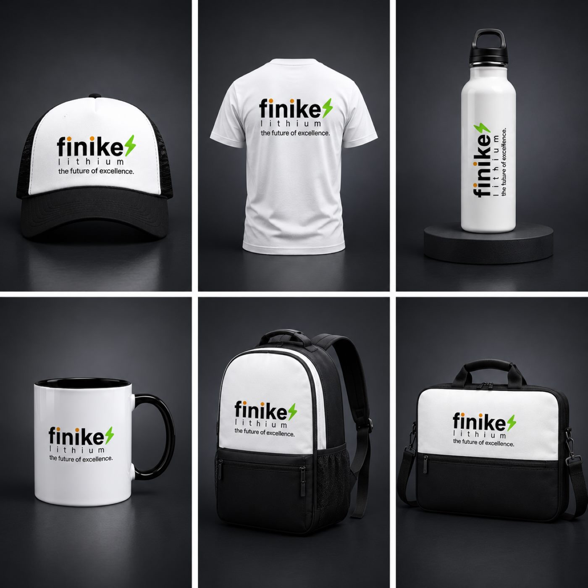
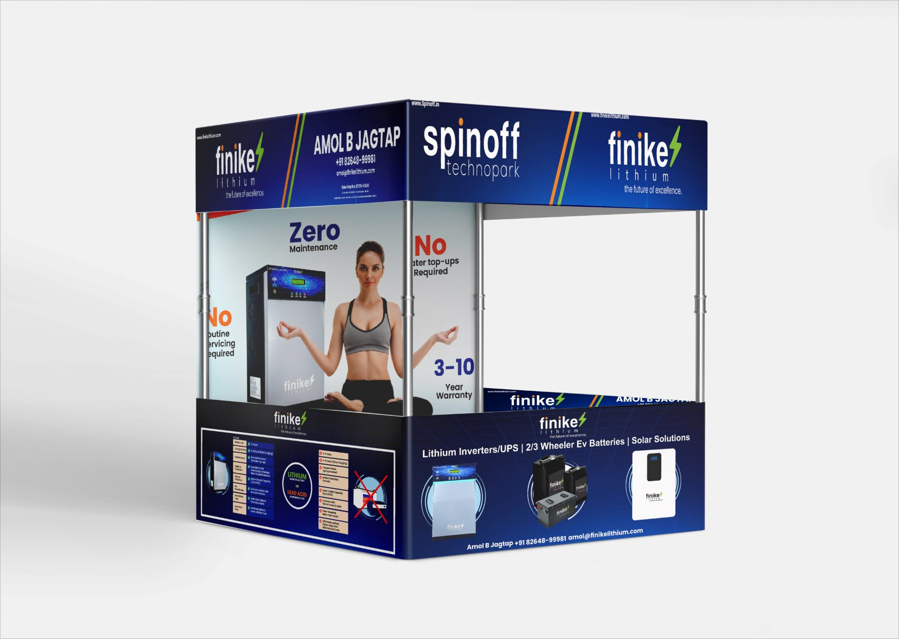

A / Signature
finikeϟl i t h i u m
The electric bolt turns the wordmark into an instant signal of motion, stored power, and momentum.
Brand identity system · 2026
A bold, scalable identity for Finike Lithium — built to make future-ready power feel dependable, visible, and unmistakably alive.

THE FUTURE OF EXCELLENCE
01 / The brief
Finike Lithium needs an identity that can move confidently from mobility to energy storage — appearing as credible on a product label as it does on a fleet, a screen, or an everyday object.
02 / The system
A / Signature
The electric bolt turns the wordmark into an instant signal of motion, stored power, and momentum.
B / Energy palette
C / Typography
Future
in motion.
Poppins gives display headlines a confident shape while keeping product information clear and easy to read.
03 / In the world
The identity extends from everyday merchandise to a full exhibition booth, keeping the Finike mark visible across different scales.



04 / Design principles
High contrast and a focused bolt device make the brand easy to recognise from a distance.
Controlled diagonals, crisp grids, and forward language create a sense of measurable momentum.
Deep navy grounds the optimistic colours in confidence and technical credibility.